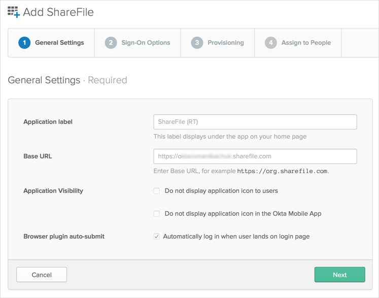
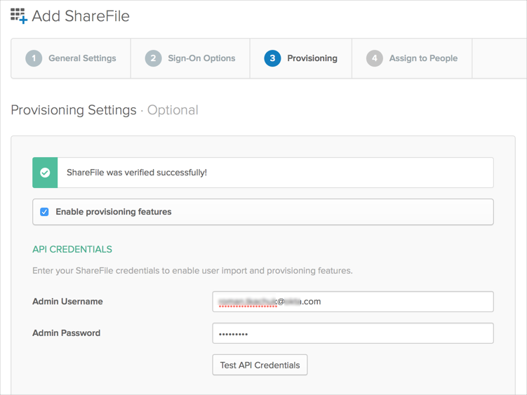

This guide provides the steps required to configure Provisioning for ShareFile, and includes the following topics:
The following provisioning features are supported:
Import New Users
Import Profile Updates
Push New Users
Push Profile Updates
Push Password Updates
Push Groups
Before you can enable Provisioning Features you will need valid ShareFile API credentials, and a Base URL needs to be set correctly on the General tab for the ShareFile App.

Configure your Provisioning settings for ShareFile as follows:
Check the Enable provisioning features box.
Under API Credentials enter a valid Admin Username and Admin Password:

Click Test API Credentials. If your credentials are valid, you’ll see a success message.
Scroll down and select the Provisioning Features you'd like to enable, then click Next to proceed to the Assign to People tab.
You can now assign people to the app, if needed.
Click Done to finish the ShareFile App configuration.
Schema discovery is not supported by this app.